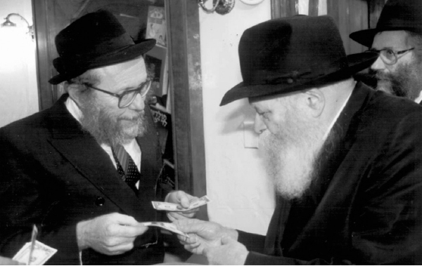

“Go to Russia”
After the Rebbe told R ’ Zajac that, despite the opening of the gates in Russia, American citizens still could not go there and print the Tanya, R ’ Zajac continued printing Tanyas all over the United States. * After suggesting that a former Russian citizen be the one to print the Tanya there, the Rebbe agreed and R ’ Moshe Chaim Levin went to Russia to print the Tanya. * Then, in Cheshvan of 5752, when they gave the Rebbe Tanyas that were printed in Russia, they were surprised at the Rebbe ’ s question , “What ’ s happening with Russia?” * Part 2
By Rabbi Shneur Zalman Chanin

My friend, R’ Leibel Zajac, could not rest as long as there was an opportunity to print the Tanya in yet another location. Since we could not go to Russia, R’ Leibel thought about how we could send a representative there in order to print the Tanya.
He remembered that when we had brought up the idea that R’ Moshe Slonim, director of Ezras Achim, print the Tanyas there, the Rebbe was opposed to doing it through a mosad already operating in Russia. So R’ Leibel decided to ask the Rebbe whether we could send a Chassid from New York who was born in Russia. On the one hand, he was not connected with any institution; on the other hand, he knew the language and the Russian mentality and he would be a shliach who would work exclusively on printing the Tanya.
We spoke to R’ Moshe Chaim Levin about it. He was Russian born and lived in Crown Heights at the time. Aside from knowing Russian, he was knowledgeable in printing. He was the right man at the right time.
After presenting the idea to R’ Slonim and he agreed, we wrote to the Rebbe. We quickly received a positive answer and the operation got underway.
After getting permission to bring a printing press into Russia, we bought a good machine in New York and sent it to Russia. After many adventures, R’ Moshe Chaim managed to get it to work and to print many Tanyas.
THE REPORT SUBMITTED TO THE REBBE
When R’ Moshe Chaim returned to New York, he prepared a detailed report about his trip:
To the Rebbe shlita,
A report about printing the Tanya in the Soviet Union
The preparations for the printing operation entailed buying a printing press here in New York (along with a generator) and sending it to Russia along with paper.
Since my visa was a business one, there were no problems bringing all this into the country. I just paid a tax that cost a little more than ten dollars.
I rented a bus in Russia which usually served as an express cafe: it was built with a kitchen (oven, refrigerator, faucets with water), tables and benches, with a driver.
I arrived in Moscow on Wednesday, 16 Sivan. At first there was a problem with the printing press. Until I found an expert to fix it (because in Russia there are hardly any machines like this) it was Erev Shabbos. I had to remain in Moscow for Shabbos and on Sunday morning, 20 Sivan, I headed out.
On the way from Moscow to Charkov, I stopped in each city (even a small town, but not a village) and printed 13 Tanyas. I usually printed an average of 3-4 Tanyas a day, and sometimes 5, if the towns were near one another and everything went smoothly. I would try and pick a central place – a plaza, the municipal office, the communist party office, etc.
At night, I usually slept in hotels and sometimes, on the bus. The driver (not Jewish) always slept on the bus, which meant he was also guarding everything we had there.
In Charkov, I did the printing in the yard of the big shul which had recently been returned. R’ Moshe Moscowitz and some yeshiva bachurim were there when I printed the Tanya. I gave out ten pairs of t’fillin and mezuzos in Charkov.
PRINTING NEAR THE HOUSE WHERE THE REBBE LIVED
From Charkov I went to Dnepropetrovsk. On Thursday afternoon, 24 Sivan, we arrived at the Rebbe shlita’s street and parked the bus next to the house that the Rebbe shlita lived in (opposite R’ Levi Yitzchok’s shul). There, on Miranadova Street, I printed the Tanya. R’ Shmuel Kaminetzky with yeshiva bachurim came and were overjoyed at the unusual event. I gave each one the first galley and they went to yeshiva to learn it. This was the fourteenth Tanya.
From there I went in the direction of Cherson. On the way, when we left Krivoy Rog, after midnight, the bus broke down and they only finished fixing it in the morning. In order to reach a Jewish area for Shabbos, I had to go directly to Nikolayev. I spent Shabbos in Odessa. On Erev Shabbos, 25 Sivan, in the afternoon, I printed the Tanya in the city the Rebbe shlita was born in, and this was the sixteenth Tanya.
I arrived in Odessa close to Shabbos because the bridge that connects Odessa with Nikolayev was broken, and due to construction we had to make a big detour, over one hundred extra kilometers.
On Sunday morning, 27 Sivan, I printed the Tanya in Odessa in the presence of some yeshiva students and R’ Yeshaya Gisser. I also distributed some pairs of t’fillin and mezuzos. I left for the center of the Ukraine, Uman, and found the gravesite of R’ Nachman of Breslov. I printed the Tanya right near the gravesite (we went into the yard with the bus). There were some men from Eretz Yisroel there who had come to prostrate on the grave, and some Russian Jews. I explained to them the idea of printing Tanyas all over Russia.
PRINTING THE TANYA NEXT TO THE GRAVESITE OF THE BAAL SHEM TOV
On the way to Mezhibuzh, I printed the Tanya in several towns, including Bratzlov. In Vinnitsa, in the center of the town, a Jew came on the bus who was happy to show us the way and to pick a central place for me to do the printing. He spoke Yiddish. I put t’fillin on with him and taught him how to do it himself. I wrote for him, in Russian letters, what he needs to say and he promised to put on t’fillin every weekday and to put them on with his neighbors and acquaintances.
I arrived in Mezhibuzh on Wednesday, 28 Sivan. I parked the bus right next to the entrance of the old, small cemetery where the Baal Shem Tov’s Ohel is. The gate to the cemetery was locked and I was unable to obtain the keys, but the printing of the Tanya took place just a few meters from the Ohel. It was Tanya number twenty-three. I davened Mincha there, finished printing late at night, and traveled to Khmelnitsky.
In Khmelnitsky, at the central telephone bank, as I tried calling Moscow, a young Jew approached me. He was soon going to travel to Eretz Yisroel and he tried helping me find a hotel (to no avail). He connected me with the Lerman family who run a Jewish center. They received a building recently and renovated it. One room is a shul and they even obtained a Torah. There is also an office, a lecture room, and a classroom for adults or children. They asked that we remain in touch with them and they are ready to help spread Judaism in the city and environs. They are also involved with the cemetery in Mezhibuzh. The Lermans are also planning to make aliya.
I printed the Tanya in the morning, next to this Jewish center. From there, we went to Shepetivka and Slavita. The bus broke down along the way and we had to spend hours fixing it. We arrived in Slavita in the evening where I found R’ Gedalya Katz, an eighty year old Tamim, a shochet. There is a shul and a minyan there every day.
PRINTING THE TANYA NEAR THE TZIYUN OF THOSE WHO GAVE APPROBATIONS TO THE TANYA
On Wednesday morning, the first day of Rosh Chodesh Tammuz, after printing the Tanya in Slavita, we went with R’ Gedalya to Anipoli. We arrived at the field near the entrance to the cemetery and the Ohel of the Rav HaMaggid. Together with him in the Ohel are R’ Zushe of Anipoli and R’ Yehuda Leib HaKohen who wrote approbations to the Tanya, and R’ Dovid of Anipoli. After immersing in a nearby river, I printed the Tanya (number twenty-eight). I left the first galley in the Ohel in which is printed the name of the city and the tziyun along with the approbations.
I brought R’ Gedalya back to Slavita and we went to Mezritch. It is a small town with many children. I printed the Tanya there, number twenty-nine. That same day, I also managed to print the Tanya in Korets and Novograd-Volynsky.
On the morning of Thursday, the second day of Rosh Chodesh Tammuz, I went to Kiev. We arrived in the afternoon and on the street next to the shul I printed the Tanya. There were yeshiva students there who also took the first page to learn from.
AN HISTORIC PRINTING OF THE TANYA
That day, I went to Haditch together with a bachur, Aryeh Bekker from Odessa (who learned in Kishinev and Kiev and was going to learn in Kfar Chabad). We arrived at night, slept in a hotel, and in the morning, Erev Shabbos, the 2nd of Tammuz, we went to the Alter Rebbe’s Ohel.
We found the woman who has the key to the Ohel and returned there together with her. The Ohel is below a high mountain. It is very low and impossible to reach with a bus. We drove as close as we could, first went down to immerse in the river that passes near the Ohel, and after davening in the Ohel I printed the Tanya (number thirty-four). I left the entire first volume, folded but not bound, in the Ohel of the Baal HaTanya. It was printed there for the first time!
We met a Jew there from Haditch who now lives in Charkov and had come to visit the family graves. He was an older man who had been through the war and the bachur Aryeh put t’fillin on with him for the first time in his life.
From there, we returned to Kiev for Shabbos. I gave out t’fillin to those who already put them on or who promised to do so every day, and mezuzos.
On Sunday, 4 Tammuz, I went to Niezhin where I met R’ Yosef Katz (we had spoken previously by phone). He has the key to the Ohel and we went with him outside the city to the cemetery. We went in with the bus and arrived a few meters from the Ohel. After davening (I had been in the mikva in Kiev before we left), I printed the Tanya and finished at eleven-thirty at night. Then we went back to the city and I slept in a hotel. I left the first volume of Tanya in the Mitteler Rebbe’s Ohel too, folded but not bound. It was Tanya number thirty-six.
Monday morning, 5 Tammuz, we went to nearby towns and I printed in four towns. Then the printing press broke in Mirgorod. I finished printing with difficulty and we returned to Kiev after one in the morning.
I began looking for a repairman in Kiev, but since this item did not exist there, I called an expert in Moscow. I was told he was going on vacation for a month. He would be leaving in two days for Tambov. I decided to hurry back to Moscow and to ask him to fix the machine before he left on vacation.
On the way, we ran out of gas and there was no place to buy any. We spent the night asking passing cars to sell us a bit of gasoline. That is how, little by little, over many hours, we finally arrived at a gas station that had gas (not every gas station has gas, and if they have – they ration it). The trip from Kiev to Moscow took nearly 24 hours. We arrived on Tuesday night and the mechanic fixed the machine on Wednesday morning. During the day we fixed some things on the bus and left at the end of the day. I printed Tanyas in three cities and returned to Moscow for Shabbos.
On Motzaei Shabbos Parshas Chukas, at 3:30 in the morning, I left for White Russia. On Sunday, 11 Tammuz, I printed Tanyas in Rudnya (near Lubavitch), Liozna, Horodok, and Nevel. The next day, Monday, 12 Tammuz, I printed in Vitebsk, Orsha, and Liadi (Liozna is a city and Liadi is a very small village).
MYSTERIOUS MISHAPS
There were many mishaps during the final week, starting with the machine breaking in Mirgorod (with Tanya #40). On Sunday, on the way from Moscow to White Russia, a stone from the road flew up as we drove and it broke the windshield. We had a hard time driving that day. At night, as we stood parked in a campground near Nevel, in the middle of the night, nobody was there, absolute silence, suddenly, a rock (from where?) fell and broke the large rear window. Then a lot of dust began coming into the vehicle (there was dust all along the way, but this thick dust is hard to describe) along with smoke (soot). Boruch Hashem, we did not choke. We had a hard time but finally arrived in Smolensk where we slept.
Tuesday morning, 13 Tammuz, I printed the Tanya in Smolensk (#51) and we returned to Moscow. I arranged a place for the printing press and the remaining paper. The next day, Wednesday, 14 Tammuz, I left for New York and returned home safely, boruch Hashem.
In Kiev, Avrohom Ben Anna Gluzman helped me a lot and he also found a place to bind all the Tanyas. It is done by hand, each volume sewn and with a thick binding. It is done with great care. The work should be finished in another few weeks. I managed to bring samples of the first forty Tanyas with me, and the rest will come soon, with his help. Throughout my travels in the Soviet Union, I covered about 8000 kilometers with the bus. Enclosed is a list of all the printing done in the Soviet Union.
Moshe Chaim ben Sarah Levin
22 Tammuz 5751
P.S. In addition to printing the Tanyas, I distributed 36 pairs of t’fillin and a hundred mezuzos, which R’ Leibel Zajac gave me.
THE 51 TANYAS PRINTED IN RUSSIA ARE GIVEN TO THE REBBE
On 25 Tammuz 5751, we passed by the Rebbe and gave him 51 bound Tanyas that were printed and bound in Russia.
As we approached the Rebbe, R’ Leibel said, “This is ‘we did all that you commanded,’ and now we are waiting for the promise of Moshiach coming immediately.”
The Rebbe asked, “This is from Russia or….?”
R’ Leibel said, “Yes, these 51 Tanyas, as of now, are from Russia.”
The Rebbe said, “Then [when Moshiach comes], we will also have to print Tanyas, and more than now.”
R’ Leibel said, “We are ready and willing.”
The Rebbe gave R’ Leibel a dollar and said, “May there be good news.”
Then the Rebbe gave him a second dollar and said, “This is for you and this is for the good news.”
Then the Rebbe gave him a third dollar and said, “This is for the good news that you will start saying tomorrow.”
R’ Leibel introduced R’ Moshe Chaim Levin to the Rebbe and the Rebbe asked him, “You were in Russia?”
R’ Leibel Groner, the Rebbe’s secretary, said, “He went to print the Tanyas.”
The Rebbe gave R’ Levin a dollar and said, “This is for what you did until now.”
Then the Rebbe began to say, “He will probably travel ….” but he suddenly stopped and did not finish the sentence. He said, “Now someone else will go there. Give the instructions that he needs, that he should know what you did already so he should not need to go again and figure it out.”
R’ Levin gave his report to the Rebbe as well as a video recording of the printing of the Tanyas and the Rebbe said, “This is the report?”
As usual, we received a token $20 from the Rebbe as his participation in the expenses for all the Tanyas we printed.
A SURPRISING ORDER: GO TO RUSSIA
We contacted R’ Zev Wagner of Moscow, a wonderful young man who worked hand in hand with Professor Branover (may he have a refua shleima), and he committed to continuing the printing of the Tanyas in Russia.
Relative to the situation in Russia, R’ Zev worked efficiently, but there were big problems in obtaining paper and ink. In Russia of those days, everything was scarce and only in those cities that had printing houses, big or even small, could you somehow obtain paper and ink. The quality wasn’t high, but at least it was something like paper and ink … The main thing was that in the end, you could make a book out of it.
Obviously, under these circumstances, printing Tanyas was a slow process. Every few weeks another few s’farim would arrive and it was not enough to satisfy R’ Leibel.
The surprising turn took place in Cheshvan 5752, when we passed by the Rebbe for dollars for tz’daka. We wanted to give the Rebbe some Tanyas that had been printed recently. When we submitted the s’farim, the Rebbe asked, “What about Russia?”
I was silent. The Rebbe knew why there wasn’t any significant action. R’ Leibel said, “We had no permission to go there, so what can we do?”
Then the Rebbe told us to immediately arrange our paperwork and to go there as soon as possible, that on 19 Kislev we could print the Tanya in the Peter and Paul fortress, Petropavlovskaya Krepost, in Leningrad, where the Alter Rebbe had been incarcerated.
Our adventures until we traveled and during the course of the trip are for the next chapter.
This chapter is dedicated to the memory of my mother, Leah bas R’ Shmuel Hy”d, who passed away 27 Sivan.
SPECIAL PRINTING AND BINDING SERVICES
When we saw how precious these editions of Tanya were, and how much nachas the Rebbe had with each additional place where a Tanya was printed, we thought about what we could do to increase the number of places where the Tanya is printed.
We heard that R’ Leibel Swerdlov was looking for a job. I thought he was just the person to print Tanyas on the road. I presented my idea to him, of getting a large vehicle in which we could put a printing press and a generator, and having him travel from New York to Florida and printing the Tanya in every city where Jews lived. Although the work required him to be away from home for several weeks, he agreed to do it.
The results were enormous. Nearly every day he printed a Tanya in several cities. When the vehicle filled up with printed pages, he sent the pages by parcel service to New York and he continued to the next city. In New York, we were busy binding the many Tanyas that arrived.
During the binding stage we saw clear hashgacha pratis. R’ Moshe Cadaner had come from Eretz Yisroel and was looking for a job. When he asked me whether I could find him some position, I suggested that he open a bindery for Tanyas so that all those who printed Tanyas could send the pages to him to bind. This arrangement would lower the price of binding and would speed the work along so we could give the Rebbe more bound Tanyas.
He agreed to my idea and opened a book binding business where they mainly worked on binding the many Tanyas that were printed all over the United States.
HOW LONG CAN IT BE “IN PUBLICATION”
When we submitted the Tanyas we had printed to the Rebbe, one of the first things the Rebbe looked at was the index listing of all printings of the Tanya. The Rebbe turned to those pages and looked at the new listings that had been added.
Unfortunately, there were editions on the list that said, “nimtza b’dfus” (in publication), which meant that someone had committed to printing it in a certain place and had even given it a number, but since he had delayed in having it printed, they had to write the number of the edition and note that it had not yet been printed.
The Rebbe asked us several times: What is this? How long does it have to be “in publication”? Someone who takes a number for an edition has the responsibility of printing it immediately!
Since, as members of the Vaad L’Hafatzos Sichos, we were responsible for printing the Tanya, the Rebbe told us to send an official letter on the Vaad’s letterhead, to all those who had committed to printing the Tanya, to tell them to print it posthaste!
Most Chassidim, after receiving a letter like that, dropped everything else and worked on printing the Tanya. Unfortunately though, there were some wise guys who thought that the rest of the things they were working on were just as important as printing the Tanya and they did not do as the Rebbe said. Of course, this caused the Rebbe aggravation.
R’ Leibel Zajac, who could not bear this foot-dragging in carrying out the Rebbe’s wishes, decided to print the Tanyas in all those places, at his own expense. In certain places, those who had committed to printing the Tanya did not even know that it had already been printed, thanks to him.
In the period between 22 Shevat and 11 Nissan 5748, we printed eighteen Tanyas of those which were not yet printed and which had nimtza b’dfus written next to them. These eighteen editions joined the thirteen other editions we printed in other places and on 11 Nissan we were able to tell the Rebbe the good news that in connection with the Shloshim since the Rebbetzin’s passing, 31 editions of Tanya were printed (the additional one being in the spirit of the distinction made between one “who serves G-d” and one who “has not served Him,” as explained in Tanya)
Afterward, R’ Leibel continued to print more editions of the nimtza b’dfus. One of these places was in Washington DC where a year or two had gone by since they took the number and it still wasn’t printed. After R’ Leibel printed it there, at his expense, on 10 Tammuz 5748, it was submitted to the Rebbe. The Rebbe responded: Many thanks, many thanks and the time is auspicious, between 3 Tammuz and 13 Tammuz.
Beis Moshiach (staff). "“Go to Russia”." Beis Moshiach, no. 895 (September 17, 2013).